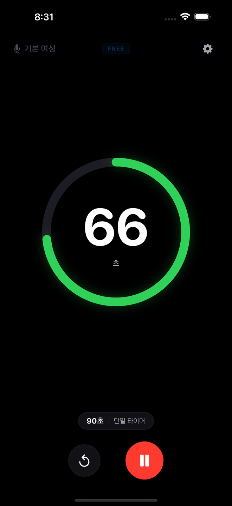
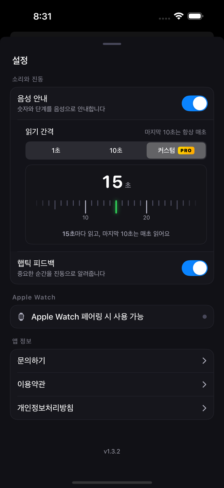
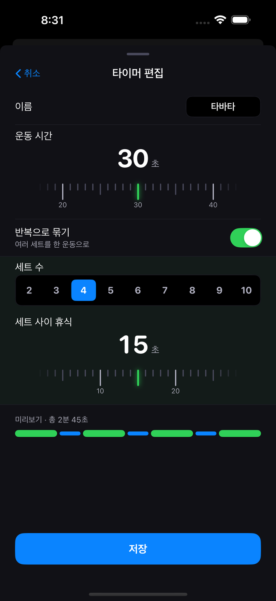
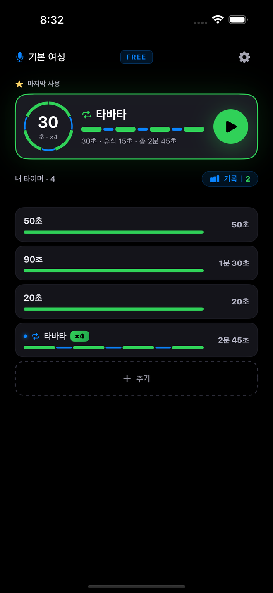
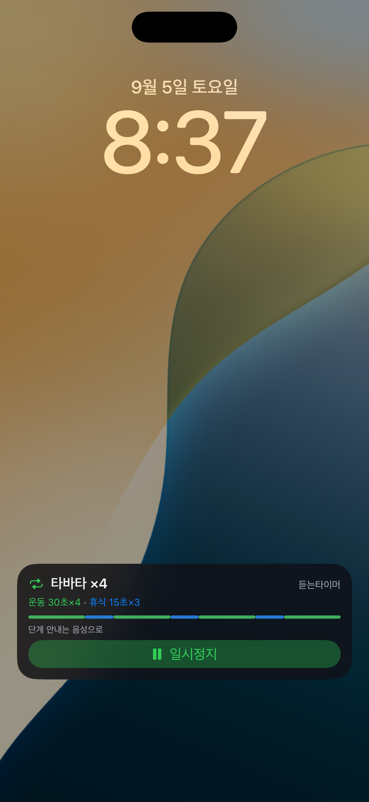
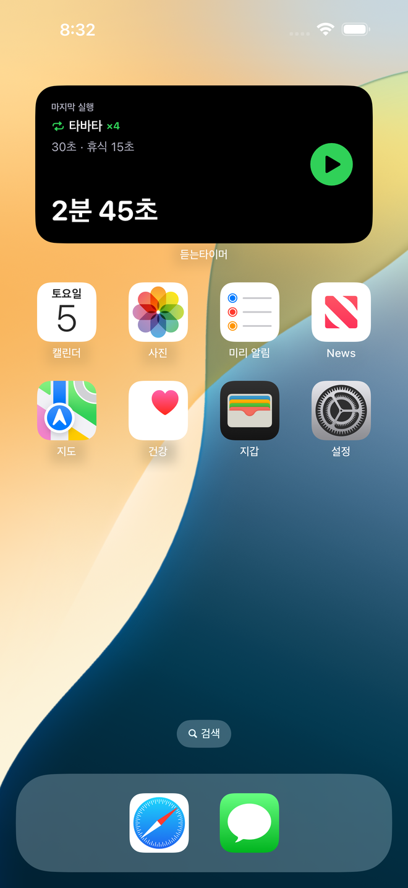
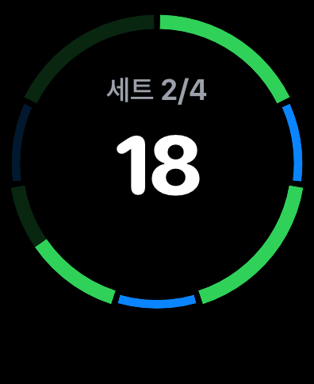
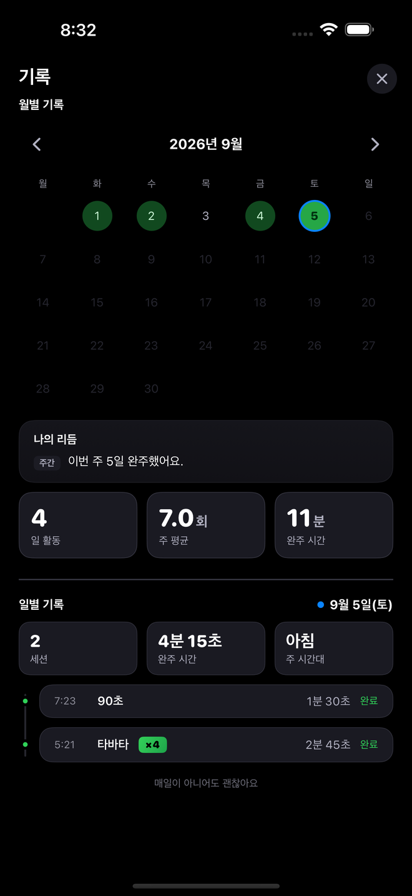
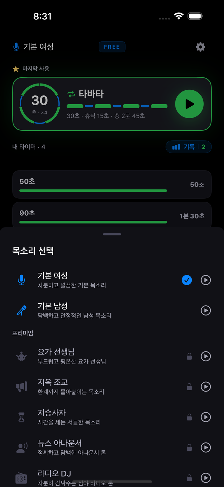

F1
매초 음성 카운트다운
음성이 카운트다운의 매초를 처음 1초부터 마지막 1초까지 읽어 줍니다 — 인터벌당 1~300초.
이럴 때 플랭크, 데드행, 스트레칭, 호흡 운동 — 내려다볼 수 없는 모든 상황.

운동하고, 쉬고, 다시 반복 — 그 매초를 귀로 들어보세요.
인터벌을 설정하면 자세에만 집중하시면 돼요. 듣는타이머가 라운드 내내 매초를 음성으로 읽어드려서, 화면을 보지 않아도 지금 몇 초인지 알 수 있어요. 플랭크, 데드행, 스트레칭, 호흡 명상도 똑같이 쓰실 수 있어요.
광고 포함 무료 · 프리미엄은 구독이 아닌 1회 결제 · iPhone (iOS 17 이상) · Apple Watch는 프리미엄에서
차이점
대부분의 인터벌 타이머는 경계에서만 알려 줍니다 — 라운드가 끝날 때 삐 소리, 길어도 마지막 몇 초. 듣는타이머는 말하는 타이머입니다. 처음 1초부터 마지막 1초까지 매초를 소리로 세어 주기 때문에, 플랭크·스트레칭·데드행·타바타 라운드·HIIT 서킷 중에도 시선은 자세에 머무릅니다.
화면을 잠그고 휴대폰을 주머니에 넣어도 카운트는 계속됩니다. 음악이나 팟캐스트는 그대로 — 카운트 순간에만 소리를 낮추고, 곧바로 원래대로 돌아옵니다.
그리고 구간이 바뀔 때마다 들립니다: 휴식, 다음 세트, 완료. 내려다볼 필요 없습니다. 추측할 필요도 없습니다.


기능 12개. 각각 무엇이고, 언제 쓰는지.
음성이 카운트다운의 매초를 처음 1초부터 마지막 1초까지 읽어 줍니다 — 인터벌당 1~300초.
이럴 때 플랭크, 데드행, 스트레칭, 호흡 운동 — 내려다볼 수 없는 모든 상황.

1초마다(기본), 10초마다 + 마지막 10초는 하나씩, 또는 프리미엄에서 직접 정한 간격 N초마다(1~60) 중에서 선택합니다.
이럴 때 무엇을 선택해도 마지막 10초는 항상 하나씩 세고, 모든 구간의 시작과 끝을 알려 줍니다.

운동(1~300초), 휴식(1~300초), 2~10세트를 설정하면 듣는타이머가 서킷 전체를 진행하며 모든 변화를 알려 줍니다.
이럴 때 타바타, HIIT 서킷, 복싱 라운드, 인터벌 러닝.

타이머를 최대 12개까지 저장합니다. 가장 최근에 쓴 타이머가 큰 카드로 맨 위에 올라와 한 번 탭하면 시작됩니다. 추가·삭제·순서 변경 모두 자유롭습니다.
이럴 때 "어제와 똑같이"를 한 번의 탭으로.

휴대폰을 잠그고 주머니에 넣거나 바닥에 두어도 음성은 계속됩니다.
이럴 때 책상 앞이 아닌 모든 운동.
내 음악은 그대로 재생되고, 카운트가 그 위에 얹힙니다.
이럴 때 헤드폰이나 스피커로 훈련할 때.
잠금을 해제하지 않고도 잠금 화면과 다이내믹 아일랜드에서 타이머를 봅니다 — 카운트, 현재 구간, 세트까지. 프리미엄에서는 잠금 화면에서 바로 일시정지·재개·정지할 수 있습니다.
이럴 때 세트 사이에 잠긴 화면을 한 번 흘깃 볼 때.

위젯이 최근 사용한 프리셋 또는 고정한 프리셋을 보여 주고, 탭하면 앱이 열립니다. 프리미엄에서는 ▶로 위젯에서 바로 타이머를 시작하고 — 앱을 열 필요가 없습니다 — 진행 중에는 위젯에 일시정지와 정지가 표시됩니다.
이럴 때 휴대폰을 암밴드에 넣기 전에 홈 화면에서 시작할 때.

말하거나 단축어를 탭하면 앱을 열지 않고 최근 프리셋을 시작합니다 (프리미엄이 없으면 앱이 열립니다).
이럴 때 손이 바쁘고, 휴대폰은 방 저쪽에 있을 때.
손목에서 바로 타이머를 시작하고 조작합니다. Apple Watch 컴플리케이션에서 한 번 탭하면 즉시 시작됩니다. 모든 프리셋이 Apple Watch에 자동으로 동기화됩니다. 10초 전 경고와 종료 시점에 손목이 함께 두드려 줍니다. Watch는 음성을 재생하는 iPhone 타이머의 리모컨으로 동작합니다.
이럴 때 휴대폰을 꺼내지도 않을 때.

귀가 막혀 있어도 손목이 함께 두드려 줍니다(Apple Watch). iPhone은 10초 전 경고와 종료 시점에 진동하며, iPhone 햅틱은 설정에서 끌 수 있습니다.
이럴 때 시끄러운 체육관, 헤드폰 없이.
월간 캘린더 통계 — 어떤 날에 운동했는지 한눈에 보고, 하루 단위로 완료한 항목도 확인합니다. 프리미엄에서는 "나의 리듬"이 주간·월간·전체 패턴 분석을 더해 줍니다.
이럴 때 한 달이 채워지는 걸 볼 때.

캐릭터마다 다른 톤으로 운동의 리듬을 만들어 드려요.
선택하기 전에 앱에서 모든 음성을 미리 들어 볼 수 있습니다. 음성은 고품질 신경망 TTS로 생성해 앱에 내장했기 때문에, 운동 중에는 인터넷이 필요하지 않습니다.
영어, 일본어, 한국어를 지원하며 앱은 iPhone 언어 설정을 따릅니다.

듣는타이머는 배너 광고와 함께 무료입니다. 프리미엄은 구독이 아닌 1회 결제로, 이 iPhone과 Apple Watch에서 아래 모든 항목을 해금합니다. Apple 계정당 1회, 프리미엄 전체를 3일간 무료로 써 볼 수 있습니다: 메인 화면의 금색 "3일 체험" 칩을 탭하고 짧은 광고 하나를 보면 됩니다.
가격은 국가별로 App Store에 표시됩니다.
예. 카운트다운의 매초를 처음 1초부터 마지막 1초까지 소리로 읽습니다 — 인터벌당 최대 300초. 10초 간격 모드에서도 마지막 10초는 하나씩 세어 줍니다.
예. 카운트는 백그라운드에서 계속되고, 라이브 액티비티가 잠금 화면에 표시합니다.
아니요. 오디오 더킹이 카운트 순간에만 음악을 낮추고, 곧바로 원래대로 돌립니다.
예. 운동과 휴식 구간, 최대 10세트로 루틴을 만드세요. 모든 구간 변화를 음성으로 알려 줍니다.
대부분의 인터벌 타이머는 경계에서만 알려 줍니다 — 라운드가 끝날 때, 또는 마지막 몇 초. 듣는타이머는 매초를 소리로 세어 주기 때문에, 화면을 보지 않아도 지금 어디쯤인지 늘 알 수 있습니다.
아니요. 1회 결제입니다. 가격은 국가별로 App Store에 표시됩니다.
예. 프리미엄 전체 기능을 Apple 계정당 1회, 3일간 무료로 써 볼 수 있습니다. 메인 화면의 금색 "3일 체험" 칩을 탭하고 짧은 광고 하나를 보세요.
예, 프리미엄에서. 손목에서 타이머를 시작하고 조작하며, 컴플리케이션에서 한 번 탭하면 시작되고, 프리셋은 자동으로 동기화됩니다. Watch는 iPhone 타이머의 리모컨으로 동작하며 음성은 iPhone이 재생합니다.
예, 프리미엄에서: 홈 화면이나 잠금 화면 위젯, Siri나 단축어, 또는 Apple Watch에서. 프리미엄이 없으면 해당 탭은 앱을 열고, 거기서 시작하게 됩니다.
음성 캐릭터 7종 — 기본 여성과 기본 남성은 무료이고, 요가 선생님·지옥 조교·저승사자·뉴스 아나운서·라디오 DJ는 프리미엄에 포함됩니다. 음성과 앱은 영어, 일본어, 한국어를 지원하며 iPhone 언어 설정을 따릅니다.
아니요. 계정이 없고 모든 음성이 앱에 내장되어 있어 타이머는 오프라인에서 동작합니다. App Store 구입과 선택적 광고에만 연결이 필요합니다.